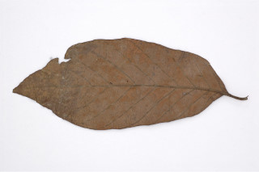
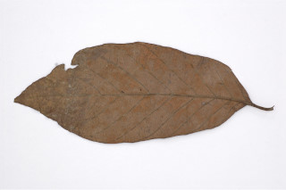

Deciduous trees up to 25 m tall.
25 ಮೀ. ಎತ್ತರದವರೆಗಿನ ಎಲೆಉದುರು ಮಾದರಿಯ ಮರಗಳು.
Deciduous trees up to 25 m tall.
இலையுதிர் மரம் 25 மீ. உயரம் வரை வளரக்கூடியது.
Bark grey, scaly.
ತೊಗಟೆ ಬೂದು ಬಣ್ಣದಲ್ಲಿದ್ದು ಚಕ್ಕೆ ರೂಪದಲ್ಲಿರುತ್ತದೆ.
Bark grey, scaly.
மரத்தின் பட்டை சாம்பல் நிறமானது, செதில்களாக உதிருபவை.
Branches horizontal; young branchlets quadrangular, glabrous.
ಕಿರುಕೊಂಬೆಗಳು ಕಾಂಡದ ಲಂಬ ರೇಖೆಗೆ ಸಮಕೋನದಲ್ಲಿರುತ್ತವೆ;ಎಳೆಯ ಕಿರುಕೊಂಬೆಗಳು ಚತುಷ್ಕೋನಯುಕ್ತವಾಗಿರುತ್ತವೆ ಮತ್ತು ರೋಮರಹಿತವಾಗಿರುತ್ತವೆ.
Branches horizontal; young branchlets quadrangular, glabrous.
கிளைகள் நிலத்திற்கு இணையானவை; சிறிய நுனிக்கிளைகள் குறுக்குவெட்டுத் தோற்றத்தில் நான்கு கோணங்களுடையது, உரோமங்களற்றது.
Leaves simple, opposite, decussate; stipules lanceolate, interpetiolar, caducous and leaving scar; petioles 2-3.5 cm long, planoconvex in cross section, glabrous; lamina 16-28 x 7-13.5 cm, elliptic, elliptic-oblong, apex acuminate, base truncate to obtuse, margin entire, pubescent beneath when young; midrib raised above; secondary_nerves up to 10-14 pairs; tertiary_nerves distantly obliquely percurrent.
ಎಲೆಗಳು ಸರಳವಾಗಿದ್ದು ಕತ್ತರಿಯಾಕಾರದ ಅಭಿಮುಖ ಜೋಡನಾ ವ್ಯವಸ್ಥೆಯಲ್ಲಿರುತ್ತವೆ; ಕಾವಿನೆಲೆಗಳು ಭರ್ಜಿಯ ಆಕಾರ ಹೊಂದಿದ್ದು, ತೊಟ್ಟುಗಳ ನಡುವೆ ಇರುತ್ತವೆ ಮತ್ತು ಉದರಿದಾಗ ಗುರುತನ್ನು ಉಳಿಸುತ್ತವೆ;ತೊಟ್ಟು 2 ರಿಂದ 3.5 ಸೆಂ.ಮೀ.ವರೆಗಿನ ಉದ್ದವಿದ್ದು, ಅಡ್ಡ ಸೀಳಿದಾಗ ಸಪಾಟ ಪೀನ ಮಧ್ಯದ ಆಕಾರ ಹೊಂದಿದ್ದು, ರೋಮರಹಿತವಾಗಿರುತ್ತವೆ;ಪತ್ರಗಳು 16 -28 X 7-13.5 ಸೆಂ.ಮೀ. ಗಾತ್ರ ಹೊಂದಿದ್ದು ಅಂಡವೃತ್ತ, ಅಂಡವೃತ್ತ-ಚತುರಸ್ರದ ಆಕಾರ ಹೊಂದಿದ್ದು, ಕ್ರಮೇಣ ಚೂಪಾಗುವ ಮಾದರಿಯ ತುದಿ, ಛಿನ್ನಾಗ್ರದಿಂದ ಚೂಪಲ್ಲದ ಮಾದರಿವರೆಗಿನ ಬುಡ, ನಯವಾದ ಅಂಚು ಹೊಂದಿದ್ದು ಎಳೆಯದಾಗಿದ್ದಾಗ ಮೃದುತುಪ್ಪಳದಿಂದ ಕೂಡಿರುತ್ತವೆ; ಮಧ್ಯನಾಳ ಪತ್ರದ ಮೇಲ್ಭಾಗದಲ್ಲಿ ಉಬ್ಬಿರುತ್ತದೆ;ಎರಡನೇ ದರ್ಜೆಯ ನಾಳಗಳು 10 ರಿಂದ 14 ಜೋಡಿಗಳಿರುತ್ತವೆ;ಮೂರನೇ ದರ್ಜೆಯ ನಾಳಗಳು ಹೆಚ್ಚಿನ ಅಂತರ ಹೊಂದಿದ್ದು ಓರೆಯಾಗಿ ಎಲೆಯ ದಿಂಡಿಗೆ ಅಡ್ಡವಾಗಿ ಕೂಡುತ್ತವೆ.
Leaves simple, opposite, decussate; stipules lanceolate, interpetiolar, caducous and leaving scar; petioles 2-3.5 cm long, planoconvex in cross section, glabrous; lamina 16-28 x 7-13.5 cm, elliptic, elliptic-oblong, apex acuminate, base truncate to obtuse, margin entire, pubescent beneath when young; midrib raised above; secondary_nerves up to 10-14 pairs; tertiary_nerves distantly obliquely percurrent.
இலைகள் தனித்தவை, எதிரடுக்கமானவை, குறுக்குமறுக்கானவை; இலையடிச்செதில் ஈட்டி வடிவானது, இலையடிச்செதில் இருஇலைக்காம்பிற்கு நடுவே (இண்டர்பீட்டியோலார்) உடையது, எளிதில் உதிரக்கூடியது மற்றும் தழும்புகளை ஏற்படுத்துகின்றன; இலைக்காம்பு 2-3.5 செ.மீ. நீளமானது, குறுக்குவெட்டுத் தோற்றத்தில் பிளேனோகான்வக்ஸ், உரோமங்களற்றது; இலை அலகு 16-28 x 7-13.5 செ.மீ., நீள்வட்ட வடிவானது, நீள்வட்டம்-நீள்சதுர வடிவானது, அலகின் நுனி அதிக்கூரியது, அலகின் தளம் சதுர வடிவானது முதல் மெட்டையானது, அலகின் விளிம்பு முழுமையானது, இளம்பருவத்தில் அலகின் கீழ்பரப்பு உரோமங்களுடையது; மையநரம்பு மேற்புறத்தில் அலகின் பரப்பைவிட உயர்ந்து இருக்கும்; இரண்டாம் நிலை நரம்புகள் 10-14 ஜோடிகள்; மூன்றாம் நிலை நரம்புகள் தளம் நோக்கிய இணையான அகன்ற பெர்க்கரண்ட்.
Inflorescence terminal, globose head; flowers sessile, yellow.
ಪುಷ್ಪಮಂಜರಿಗಳು ತುದಿಯಲ್ಲಿನ ಗೋಳಾಕಾರ ಮಂಜರಿ ಮಾದರಿಯವು;ಹೂಗಳು ತೊಟ್ಟುರಹಿತವಾಗಿದ್ದು ಹಳದಿ ಬಣ್ಣದಲ್ಲಿರುತ್ತವೆ.
Inflorescence terminal, globose head; flowers sessile, yellow.
மஞ்சரி தண்டின் நுனியில் காணப்படும், கோள வடிவமான சீரமஞ்சரி; மலர்கள் காம்பற்றது, மஞ்சள் நிறமானது.
Capsule arranged in globose heads, each with 2-folicular cocci; seeds many, angular.
ಸಂಪುಟ ಫಲಗಳು ದುಂಡಗಿನ ಗೋಳಾಕಾರದಲ್ಲಿರುತ್ತವೆ,ಪ್ರತಿಯೊಂದು ಸಂಪುಟ ಫಲದಲ್ಲಿ 2 ಮರಿ ಸೋತಫಲಗಳಿರುತ್ತವೆ; ಬೀಜಗಳ ಸಂಖ್ಯೆ ಹಲವಾರು ಇದ್ದು ಕೋನಯುಕ್ತವಾಗಿರುತ್ತವೆ.
Capsule arranged in globose heads, each with 2-folicular cocci; seeds many, angular.
வெடிகனி (கேப்சியூல்) கோள வடிவமான சீரமஞ்சரியில் அமைந்தவை, ஒர் கனி இரண்டு இலைப் போன்ற அமைப்பு கொண்ட உருண்ட வடிவுடையது (காக்கை); விதைகள் எண்ணற்றது, கோணங்களுடையது.


 
